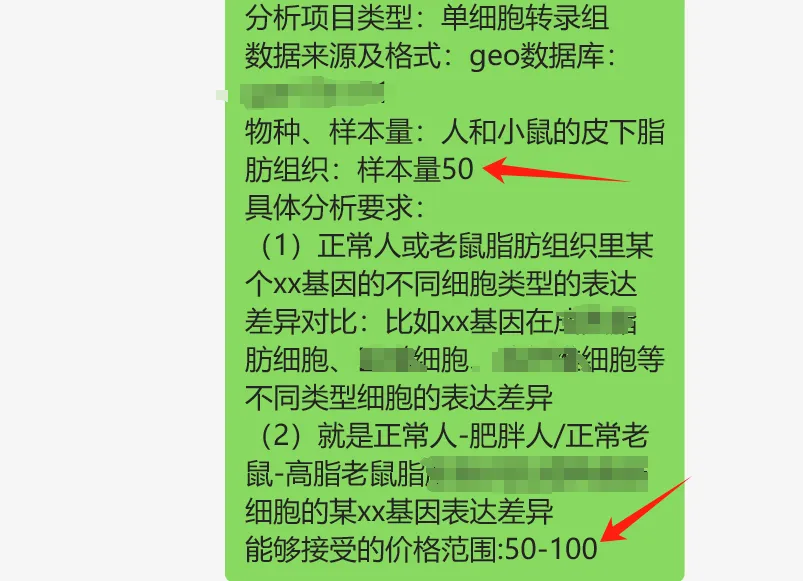

你的努力付出，可能并不被认可
原文：https://mp.weixin.qq.com/s?__biz=MzAwMzIzOTk5OQ==&mid=2247505868&idx=1&sn=e1c814990e3ca75798cdf9b1acd1d1e8&chksm=9b3cae9cac4b278ac00f67b4d0ca128bbafaf0d8fd953c2c1d5b190d953bce5f12ca36e91c70#rd 合集：漫谈胡侃
前两天收到一个粉丝的分析要求，要求分析50例 样本的单细胞测序，开价是50 。其实换位思考一下明显就能发现不合理的地方，如果觉得这个工作只值这个价值，完全可以自己学一学啊：二十万+播放量的单细胞教程，转粉率知识区Top3%。可能真的学了两节课，就能够明白自己给的offer有多么不尊重别人的劳动，颇有种我上我不行，你做起来简单所以这个工作没有价值。

借机也说说，有的时候还是得互相理解一下，需要尊重别人的付出。公众号里有一些资料是需要转发才能领取的，不能因为这样你就骂我。将心比心，试问你连动动手指转发一下都不愿意，我又何必把我夜以继日做出来的资料双手奉上呢还要挨一巴掌呢？另外，我们也是很能够体会到大家学习中的辛苦，也很愿意为大家解决问题，但是请不要再在后台/客服回复"代码"、"报错"这样的字眼了，现在全平台的粉丝加起来有6w+ ，实在是很难保持热情一个个的问一句：你是要什么代码？你是要解决什么报错？能不能截图给我看一下你遇到了什么问题我好给你debug？如果足够尊重别人，还是应该在提问前先检索一番：如何搜索公众号过往发布内容所以说，换位思考真的很重要，虽然我们的课程下面都是夸赞的居多，但是也会收到一些建议。同一个课程下面，有的同学可能会留言太简单了，没必要说那么多废话；有的同学却觉得太难了能不能做的再详细些。总的来说，还是一句众口难调，我的课程和推送都不是1对1定制的，有些不适合你的地方，只能靠你们自己去适应了。

如何联系我们

 公众号后台消息更新不及时，超过48h便不许回复读者消息，这里给大家留一下领取资料及免费服务器(生信分析为什么要使用服务器？)的微信号 ，方便各位随时交流、提建议（科研任务繁重，回复不及时请见谅）。此外呼声一直很高的交流群 也建好了，欢迎大家入群讨论：
公众号后台消息更新不及时，超过48h便不许回复读者消息，这里给大家留一下领取资料及免费服务器(生信分析为什么要使用服务器？)的微信号 ，方便各位随时交流、提建议（科研任务繁重，回复不及时请见谅）。此外呼声一直很高的交流群 也建好了，欢迎大家入群讨论：
大家可以阅读完这几篇之后添加给生信入门初学者的小贴士 如何搜索公众号过往发布内容

 您点的每个赞和在看，我都认真当成了喜欢
您点的每个赞和在看，我都认真当成了喜欢